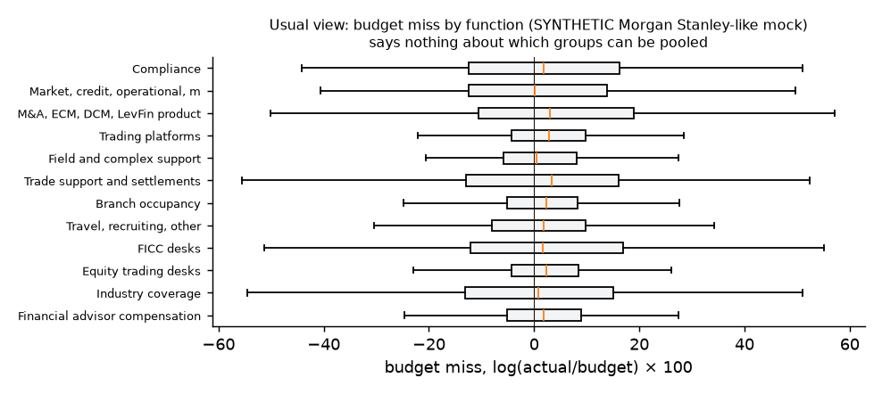
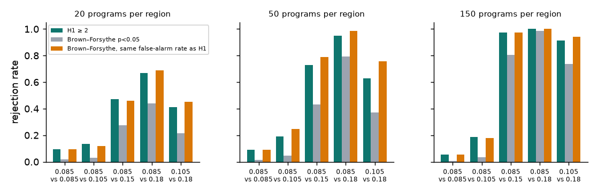
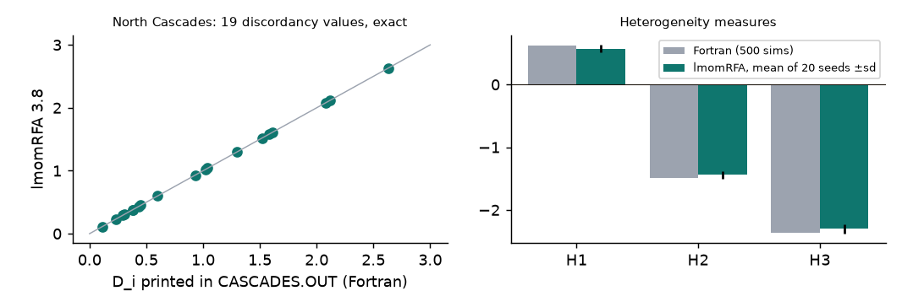
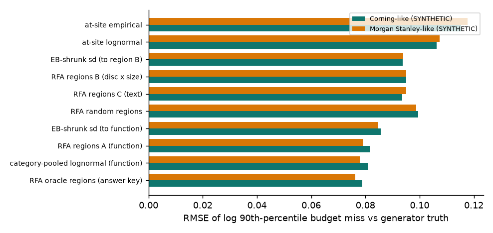
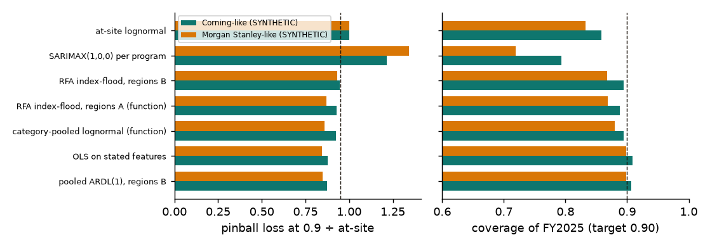

L-moment regional frequency analysis (Hosking–Wallis) · from hydrology (regional flood and rainfall frequency: pooling short gauge records across similar sites)
Which programs can share a budget-miss band, and does pooling help?
What it isPools short records across similar sites into regions, tests the pooling with L-moment heterogeneity and discordancy, then fits one regional curve.
VerdictInteresting. Home field: established (the standard in regional flood frequency; exact reproduction; low power on short, correlated records).
Top pickMath (effort M): H-guided region search: merge or split stated categories until homogeneous, with a year-effect null so correlated programs don't fake homogeneity.
DataSYNTHETIC mock ZBB (Corning-like FY2020–25, Morgan-Stanley-like FY2021–25); answer key for scoring only
The one picture
Usual view: budget miss by function (grouped boxplot)

Programs in L-moment space, and H1 per region for five schemes
👍 go ahead · 👎 drop · or just comment what you think
Notation
Symbol
Meaning
Here
site \(i\), record \(x_{i1..in_i}\)
a river gauge and its annual maximum floods
a program and its yearly budget-miss ratio \(x=\) actual ÷ budget, \(n_i=4\)–6 years (SYNTHETIC)
\(\ell_1,\ell_2,\ell_3,\ell_4\)
sample L-moments (linear combinations of order statistics)
per program
\(t=\ell_2/\ell_1,\ t_3,\ t_4\)
L-CV, L-skewness, L-kurtosis
a program's relative spread, asymmetry and tail weight of misses
region
a group of sites assumed to share one growth curve up to a scale
stated function; discretionary × size band; text clusters; random (null); true σ class (answer key)
\(D_i\)
discordancy: how far site \(i\)'s \((t,t_3,t_4)\) is from its region's
"this program's miss pattern does not match its stated peers"
\(H_1\)
heterogeneity: between-site spread of \(t\) against a simulated homogeneous region
"can these programs share one band?"
\(q(F)\), \(\mu_i\)
regional growth curve and the site's index (mean)
\(Q_i(0.9)=\mu_i\,q(0.9)\): a program's 90% miss bound
Assumptions
Within a homogeneous region, all sites share one distribution after dividing by the site mean (the index-flood assumption).
Observations are independent within and between sites. The significance reading of \(H\) holds only then, and only for a kappa parent (homtest documentation, after Hosking & Wallis 1997).
Regions are formed from site characteristics, not from the at-site statistics being tested (otherwise \(H\) is biased toward homogeneity).
The estimator
Step 1 · L-momentsWith \(x_{(1)}\le\dots\le x_{(n)}\), probability-weighted moments \(b_r=n^{-1}\sum_j\frac{(j-1)\cdots(j-r)}{(n-1)\cdots(n-r)}x_{(j)}\); then \(\ell_1=b_0\), \(\ell_2=2b_1-b_0\), \(\ell_3=6b_2-6b_1+b_0\), \(\ell_4=20b_3-30b_2+12b_1-b_0\). \(\ell_2\) is half the mean absolute difference between two draws, so L-moments are linear in the data and far less outlier-driven than variance and skewness.
Step 2 · discordancy\(u_i=(t^{(i)},t_3^{(i)},t_4^{(i)})^\top\), \(\bar u\) the unweighted regional mean, \(A=\sum_i(u_i-\bar u)(u_i-\bar u)^\top\):
$$D_i=\tfrac{N}{3}(u_i-\bar u)^\top A^{-1}(u_i-\bar u),\qquad \textstyle\sum_iD_i=N,\quad D_i\le (N-1)/3 .$$
Critical value 3 for \(N\ge 15\) (smaller for small regions, as in lmomRFA).
Step 3 · heterogeneity\(t^R=\sum n_it^{(i)}/\sum n_i\), \(V=\{\sum n_i(t^{(i)}-t^R)^2/\sum n_i\}^{1/2}\). Fit a four-parameter kappa to the regional \((1,t^R,t_3^R,t_4^R)\), simulate \(N_{\rm sim}=500\) regions with the same \(N\) and \(n_i\), and set \(H_1=(V-\mu_V)/\sigma_V\). \(H_1<1\) "acceptably homogeneous", \(1\le H_1<2\) "possibly", \(\ge2\) "definitely heterogeneous". \(H_2,H_3\) use \((t,t_3)\) and \((t_3,t_4)\) distances.
Step 4 · distribution choice and growth curve\(Z^{\rm DIST}=(\tau_4^{\rm DIST}-t_4^R+B_4)/\sigma_4\) for GLO, GEV, GNO, PE3, GPA (bias \(B_4\) and \(\sigma_4\) from the same kappa simulation); \(|Z|\le1.64\) acceptable. Fit the chosen distribution to the regional L-moments; \(\hat Q_i(F)=\bar x_i\,\hat q(F)\).
Toy example (computed by cards/_toys/toys.py)
One program, ratios (0.9, 1.0, 1.1, 1.4): \(b_0=1.1\), \(b_1=0.6167\), \(b_2=0.4417\); \(\ell_1=1.1\), \(\ell_2=0.1333\) (= half the mean pairwise gap, checked), \(\ell_3=0.05\); L-CV \(t=0.121\), L-skew \(t_3=0.375\). Five programs with \((t,t_3,t_4)\) = (0.10, 0, 0.10), (0.05, 0.1, 0.12), (0.08, −0.1, 0.11), (0.06, 0.05, 0.10), (0.20, 0.3, 0.15): \(D_i\) = 0.73, 1.07, 1.23, 0.65, 1.31, summing to 5 = \(N\). The obvious outlier (L-CV 0.20) scores only 1.31 because \(D_i\le(N-1)/3=1.33\): in small regions discordancy cannot flag anything, which is why lmomRFA lowers the critical value for \(N<15\). Regional L-CV \(t^R=0.098\), observed \(V=0.054\).
How it differs from the usual approach. A budget analyst compares programs within a category by boxplot or tests equal variances (Levene / Brown–Forsythe). Those say whether spreads differ, not whether a pooled band is safe to use, and they use only the second moment. Regional frequency analysis (i) measures spread, skew and tails on the L-moment scale that is stable with 4–6 points, (ii) simulates what a homogeneous region with these record lengths would look like, and (iii) delivers the pooled quantile itself, with a distribution test.
Followed: lmomRFA 3.8 help pages (regtst, regsamlmu, regfit; Hosking) and lmom 3.3; Hosking's LMOMENTS Fortran package and its Cascades example output (StatLib, CASCADES.OUT) for the reproduction; the homtest help page (Viglione) for the H formulas and the significance caveat. Hosking & Wallis (1997), Regional Frequency Analysis: An Approach Based on L-Moments (Cambridge), cited by all of these, not read. The bound \(D_i\le(N-1)/3\) is from our own algebra (\(A\) is the sum of the \(N\) outer products) and checked numerically in the toy.
What we found
Finding 1
H1 says function is a valid pooling unit; discretionary × size is not.
Median H1 per region (500 kappa simulations each): stated function −0.09 (Corning-like) and −0.05 (MS-like), with 15% / 7% of regions at H1 ≥ 2; text clusters 1.42 / 2.16; discretionary × size band 3.56 / 2.34; random regions of matched size 4.89 / 8.33; the generator's true noise classes (answer key) 0.92 / −1.72, none ≥ 2. Brown–Forsythe at 5% flags 4% / 0% of function regions, 50% / 20% of discretionary × size, 67% / 40% of random.
Computed on SYNTHETIC data. In the generator, noise σ is set by function family, which is what H finds. Regional L-skewness is at most 0.24 (median 0.04–0.08), inside Viglione et al.'s range where H1 is the recommended test.
Power and false alarms, H1 vs Brown–Forsythe

Home field: Cascades rainfall, lmomRFA vs Hosking's Fortran

Finding 2
At matched false-alarm rate H1 has no power edge over Brown–Forsythe.
200 simulated regions per cell, our record lengths (4–6 years). Homogeneous regions: H1 ≥ 2 raises false alarms 9.5% / 9% / 5.5% at N = 20 / 50 / 150; Brown–Forsythe at 5% raises 2% / 1.5% / 0.5%. With Brown–Forsythe's threshold moved to the same false-alarm rate, it is as powerful or more: σ 0.085 vs 0.15 at N = 50, H1 0.73, BF matched 0.79 (BF at 5% 0.43). Post hoc, on the real category regions, H1 ranks truly mixed regions better: AUC 0.86 / 0.89 vs BF 0.81 / 0.85.
Pre-registered pass (power ≥ BF + 0.05 at matched size, or size closer to nominal) failed. H1's practical edge is a looser cut-off plus a scale that ranks regions well; the AUC comparison was not pre-registered.
q90 error by estimator, both books

Walk-forward FY2025: pinball loss and coverage

Finding 3
Pooling by function cuts q90 error by a quarter; plain category pooling matches it.
RMSE of log q90 of the budget-miss ratio vs the generator's true quantile, Corning-like / MS-like: at-site empirical 0.115 / 0.118; at-site lognormal 0.106 / 0.107; RFA on discretionary × size regions 0.095 / 0.095 (ratio 0.89 [0.85, 0.94]); RFA on function regions 0.082 / 0.079 (0.77 / 0.74); category-pooled lognormal by function 0.081 / 0.078; EB-shrunk sd 0.086–0.094; random regions 0.099; oracle regions 0.079 / 0.076.
Pre-registered pass (discretionary × size RFA ≥ 20% better than at-site and ≤ category pooling) failed. RFA on the region H recommends gets the 20%, but no more than pooling the variance by function. Post hoc reading: the value is the diagnostic, not the quantile.
Finding 4
Discordancy finds planted mislabels only on one book, at 5% precision.
Among stated-mandatory programs, AUC for the planted stated-mandatory / actually-discretionary programs (12 Corning-like, 21 MS-like): D_i in region B 0.536 / 0.635; D_i within function 0.597 / 0.664; L-CV z 0.568 / 0.459; z of log sd 0.558 / 0.470; χ² variance ratio 0.561 / 0.465. D_i ≥ 3 flags 20 / 17 programs; precision 5% / 6%, recall 8% / 5%.
Pre-registered pass (D_i AUC ≥ best comparator + 0.03): MS-like passes (0.635 vs 0.470), Corning-like fails (0.536 vs 0.568). Sample L-moments from 4–6 points are too noisy to separate σ 0.085 from 0.16 reliably, and many stated-mandatory programs already sit in σ = 0.18 families, which dilutes the planted contrast.
Finding 5
Walk-forward FY2025 bands: RFA beats at-site, pooled regressions beat RFA.
90% upper bound for each program's FY2025 ratio from earlier years only (805 / 1,404 programs). Pinball loss ratio vs at-site lognormal (coverage): RFA, discretionary × size 0.946 (0.894) / 0.931 (0.868); RFA by function 0.928 / 0.871; category pooling 0.923 / 0.860; OLS on stated features 0.877 (0.909) / 0.843 (0.899); pooled ARDL(1) 0.872 / 0.847; per-program SARIMAX(1,0,0) 1.216 (0.793) / 1.344 (0.719); at-site coverage 0.858 / 0.833.
Pre-stated "promising" bar (pinball ≤ 0.95 × at-site, coverage in [0.86, 0.94]) passed on both books, but OLS and ARDL are better still. SARIMAX fell back to at-site lognormal for 20 / 39 programs.
Who plays what
Home field (regional flood frequency)
Our data (Q2, SYNTHETIC mock ZBB)
Gauging site with 10–50 years of annual floods
Program with 4–6 years of budget-miss ratios (actual ÷ budget)
Region: catchments with similar area, rainfall, geology
Programs with the same stated function, or the same stated discretionary flag and size band, or similar descriptions
Index flood: the site's mean annual flood
The program's mean ratio
Regional growth curve \(q(F)\), the 100-year flood
Regional curve for the ratio; \(Q(0.9)\), a 90% "how bad can the miss be" bound
Discordant gauge (data error, different hydrology)
Program whose miss pattern does not match its stated peers (possible mislabel)
Inputs and preprocessing
SYNTHETIC mocks from /workspace/q2-mock-zbb/output: Corning-like (FY2020–25) and Morgan-Stanley-like (FY2021–25). Programs with ≥ 4 years kept: 901 (178 dropped) and 1,549 (291 dropped). The ratio is invariant to the generator's raking (actual and budget scale together).
Regions: (A) stated function, 47 / 54 regions; (B) stated discretionary × size band (< 3m, 3–8m, ≥ 8m), 6 / 5; (C) k-means (k = 30) on TF-IDF of descriptions with numeric and history sentences removed; (D) random, sizes matched to B; (O) the generator's true noise class (answer key; the σ = 0.16 class has only 1 / 2 programs). Regions under 5 programs merged into the nearest by mean log size (pre-registered).
Answer key for scoring only: per-program σ re-derived by re-running the generator's own draws (log ratios match history to 1.1×10⁻⁸); true \(\log q_{90}\) from the generator's formula. No answer-key field enters any estimator.
Pre-registration written 14:29 ET before any run (PREREG.md).
Q2.3 · homogeneity: which scheme can share a band?
Scheme
Median H1 (Corning-like / MS-like)
Share H1 ≥ 2
Share Brown–Forsythe p < 0.05
Stated function
−0.09 / −0.05
15% / 7%
4% / 0%
Text clusters
1.42 / 2.16
43% / 53%
20% / 7%
Discretionary × size
3.56 / 2.34
67% / 60%
50% / 20%
Random (null)
4.89 / 8.33
83% / 60%
67% / 40%
True σ class (answer key)
0.92 / −1.72
0% / 0%
0% / 0%
Computed, 500 kappa simulations per region. Z-DIST: \(|Z^{\rm GNO}|\le1.64\) in 91% / 87% of function regions; best-fitting family varies (GEV 22 and GLO 12 of 47 Corning-like regions). Regional L-skewness median 0.08 / 0.04, max 0.24.
Q2.1 · borrowing strength for the 90% bound
RMSE of \(\log q_{90}\) vs truth (Corning-like / MS-like): at-site empirical 0.115 / 0.118; at-site lognormal 0.106 / 0.107; RFA, discretionary × size 0.095 / 0.095; RFA, text clusters 0.094 / 0.095; RFA, function 0.082 / 0.079; category-pooled lognormal (function) 0.081 / 0.078; EB-shrunk sd to B 0.094 / 0.094, to function 0.086 / 0.085; random regions 0.099 / 0.099; oracle 0.079 / 0.076. Ratio to at-site lognormal with 95% bootstrap interval: RFA B 0.89 [0.85, 0.94] / 0.89 [0.85, 0.92]; RFA A 0.77 [0.74, 0.80] / 0.74 [0.71, 0.76]; category pooling 0.76 / 0.73. Pre-registered pass failed (RFA on B not 20% better, and not ≤ category pooling).
Q2.2 · discordancy vs planted mislabels
AUC among stated-mandatory programs (569 Corning-like, 12 planted): D_i (B) 0.536, D_i (function) 0.597, best comparator L-CV z 0.568. MS-like (21 planted): D_i (B) 0.635, D_i (function) 0.664, best comparator 0.470. Pass on MS-like, fail on Corning-like; D_i ≥ 3 precision 5% / 6%.
B · walk-forward FY2025 (pre-stated "promising": pinball ≤ 0.95 × at-site and coverage in [0.86, 0.94])
Method
Pinball ratio (Corning-like / MS-like)
Coverage of 90% bound
At-site lognormal
1 / 1
0.858 / 0.833
RFA, discretionary × size
0.946 / 0.931
0.894 / 0.868
RFA, function
0.928 / 0.871
0.888 / 0.869
Category-pooled lognormal
0.923 / 0.860
0.894 / 0.880
OLS on stated features
0.877 / 0.843
0.909 / 0.899
Pooled ARDL(1) by region B
0.872 / 0.847
0.907 / 0.898
SARIMAX(1,0,0) per program
1.216 / 1.344
0.793 / 0.719
Computed; 805 / 1,404 programs with ≥ 3 earlier years; SARIMAX fell back to at-site lognormal for 20 / 39. RFA passes the bar on both books; the pooled regressions are better.
Deviations from the pre-registration
Home reproduction H1 0.52 vs Fortran 0.62 (inside the ±0.25 bar; 20-seed mean 0.57 ± 0.06).
lmomRFA's regtst errors on sites with n = 4 (no \(t_5\)); \(t_5\) was set to 0 for those sites after checking that D, H and Z are unchanged (as we read the code, t_5 feeds only the regional Wakeby fit).
Post hoc additions, labelled: the AUC of H1 vs Brown–Forsythe on real category regions; the matched-size power table was pre-registered, the AUC was not.
The pre-registered NumPy port parity check (R2) was not run; only lmomRFA was used.
Code and aggregated outputs (no per-program rows): runs/2026-11-22/rfa/. SYNTHETIC data only.
Established, with known limits (the standard regional method in flood and rainfall frequency; exact reproduction; heterogeneity tests have low power on short records and are optimistic under intersite correlation)
What the home field has established
Origin and use. Hosking & Wallis built the L-moment regional procedure (discordancy, heterogeneity, Z-DIST goodness of fit, index-flood estimation; book 1997, cited, not read) and distribute it as the LMOMENTS Fortran package and the R package lmomRFA (Fortran core, CRAN 3.8). Its help pages and example outputs were read.
Comparison of homogeneity tests. Viglione, Laio & Claps (2007, Water Resources Research 43:W03428; finding read in the authors' homtest documentation, paper PDF unreachable today): H1 (based on L-CV) is preferable when regional L-skewness is low, the bootstrap k-sample Anderson–Darling test when it is high, split at \(t_3^R=0.23\); H2 lacks power. Our regions have \(t_3^R\) at most 0.24 (median 0.04–0.08), so H1 is the recommended choice here.
Short records. Wiltshire (1986, Hydrological Sciences Journal; excerpt read): for 20 sites, power to detect a CV ratio of 0.75 is 12% with 5-year records vs 90% with 50 years. Our records are 4–6 years.
Intersite correlation and skew. Lilienthal, Fried & Schumann (2018, J. Hydrology; open preprint excerpt read): cross-correlated sites make H tests anticonservative and lower their power (citing Castellarin et al. 2008); they propose a copula-based bootstrap and cite a correction \(H_1^{\rm adj}=H_1+C\,\bar\rho^2(d-1)\) with \(C=0.122\).
Stated assumption. The H thresholds 1 and 2 are guidelines; the test is exact only for independent data and a kappa parent (homtest documentation).
Verdict for the home field: sound and well tested, within its stated limits.What breaks on transfer: our records are shorter than any home-field guidance (4–6 years), and programs share year effects (the generator's raking and macro years), so H is likely optimistic about homogeneity. Our power study confirms the short-record problem: H1 ≥ 2 has 9% false alarms at N = 20–50 and no power edge at matched size. What it finds that the standard toolkit misses: a calibrated answer to "can these programs share a band?" that ranks truly mixed regions better than Brown–Forsythe (AUC 0.86 / 0.89 vs 0.81 / 0.85, post hoc), and the pooled quantile itself.
Other fields it could carry to: any portfolio of short, comparable records needing a tail bound: claims by branch, incident counts by site, vendor price changes, loan-loss rates by small segment, maintenance cost overruns by asset class.
1 · Engineering · Effort S
A vectorized regtst, lmomRFA as oracle
A NumPy (then Rust) implementation of sample L-moments, D_i, the kappa-simulated H1–H3 and Z-DIST, batched across regions, so thousands of candidate regionalizations can be scored in one run (the input that the Math avenue needs).
Math sketch. L-moments are fixed linear combinations of order statistics: for each record length \(n\) precompute the weight matrix \(W_n\) (4 × \(n\)); sort each site once and multiply. For H, simulate all regions of a scheme together: kappa quantiles \(x(F)=\xi+\frac{\alpha}{k}\{1-(\frac{1-F^h}{h})^k\}\) on a \(N_{\rm sim}\times\sum n_i\) uniform matrix, group by site with segment sums, and compute \(V\) per simulated region by a weighted group variance. Cost \(O(N_{\rm sim}\sum n_i\log n_i)\), no per-region loop.
Why it matters here. lmomRFA is fast per region (0.04 s), but a region search over merges of 47–54 function categories, segments and text clusters needs \(10^4\)–\(10^5\) evaluations.
Closest prior work: lmomRFA (Hosking, R/Fortran); lmom and lmomco (R); homtest and nsRFA (Viglione, R; HW and Anderson–Darling tests). None batched across regions that we found.
Test (pass bar set now). D_i and V within 10⁻¹⁰ of lmomRFA on Cascades and both mocks; H1 within ±0.1 of the 20-seed lmomRFA mean on Cascades and on 20 mock regions; 1,000 regions × 500 simulations in under 10 s on the box.
2 · Math · Effort M · ★ Top pick
H-guided region search with a year-effect null
Form pooling regions from stated characteristics by search, not by hand: start from the finest stated categories (function × segment), merge neighbours while the merged region stays homogeneous, and test homogeneity against a null that keeps programs' common year effects.
Math sketch. Objective: minimize the estimated q90 error \(\widehat{\rm RMSE}(\mathcal R)\) from regsimq-style simulation over partitions \(\mathcal R\) of the category lattice, subject to \(H_1^{\rm yr}(R)<1\) for every region. \(H_1^{\rm yr}\) replaces independent kappa draws by a Gaussian copula with the fitted between-program year correlation \(\bar\rho\) (a Lilienthal et al. 2018-style copula bootstrap), so correlated programs do not look more homogeneous than they are. Greedy agglomeration with the merge that most reduces \(\widehat{\rm RMSE}\); stop when no admissible merge improves it. Region formation uses only stated fields, so H stays honest.
Why it matters here. Today H identified function as the valid unit and RFA on it gained 23–26% over at-site, but tied with plain category pooling. A search that can merge small homogeneous functions (and split heterogeneous ones by size or segment) is the only route by which RFA can beat category pooling, and the year-effect null addresses the main home-field critique for our data.
Closest prior work: Hosking & Wallis region formation by cluster analysis of site characteristics (book, cited, not read); nsRFA's region-formation tools (Viglione; CRAN 0.7-17 manual, not read in detail); Lilienthal, Fried & Schumann (2018) copula bootstrap for H (preprint excerpt read). None combine a search with a correlation-aware H.
Test (pass bar set now). On both SYNTHETIC books: q90 RMSE ≤ 0.95 × category pooling by function, share of searched regions that mix answer-key σ classes ≤ 10%, and on 200 simulated books with a planted year effect (\(\bar\rho=0.3\)) the size of \(H_1^{\rm yr}\ge2\) on homogeneous regions within [0.03, 0.07].
3 · New use on our data · Effort S
Regional growth curves for year-on-year surprises (Q2.3)
Fit the regional curve to program-level year-on-year growth ratios (actual this year ÷ last year) within homogeneous regions, then flag a program whose FY2025 move lies beyond its regional 95% curve as "real change, not noise".
Math sketch. \(g_{iy}=a_{iy}/a_{i,y-1}\) (on actuals with the year's raking factor divided out, since raking varies by year); index \(\mu_i=\) at-site mean of \(g\) through FY2024; regional curve \(q_R(F)\) from the L-moments of \(g/\mu_i\); flag if \(g_{i,2025}>\mu_iq_R(0.975)\) or \(<\mu_iq_R(0.025)\). Score: the exceedance probability \(\hat F_R(g_{i,2025}/\mu_i)\).
Why it matters here. Q2.3 asks which moves are real. Per-program z-scores from 3–5 growth observations are very noisy; a regional curve borrows the spread from homogeneous peers, which today's run showed is worth 23–26% on the q90 error.
Closest prior work: the index-flood quantile itself (Hosking & Wallis); no use on budget or cost growth found.
Test (pass bar set now). On both books, AUC for the planted stated-growth / actually-declining programs (6 / 26) ≥ at-site z + 0.03, with flag precision reported at the 95% curve.
Q2.1 · Borrowing strength
Pooling short records helps: RFA on stated-function regions cuts the q90 error 23% / 26% vs at-site lognormal (RMSE 0.082 / 0.079 vs 0.106 / 0.107), but no more than pooling the variance by function (0.081 / 0.078). RFA on discretionary × size regions gains only 11% (0.89 / 0.89), failing the pre-registered bar. Walk-forward FY2025: RFA beats at-site (pinball 0.95 / 0.93) but pooled OLS and ARDL do better (0.88 / 0.84).
Q2.3 · Real vs noise
H1 answers "which programs can share a band": stated function, yes (median H1 ≈ 0); discretionary × size and random groupings, no (2.3–8.3). It ranks truly mixed regions better than Brown–Forsythe (AUC 0.86 / 0.89 vs 0.81 / 0.85, post hoc), but has no power edge at matched false-alarm rate.
Q2.2 · Text vs numbers
Discordancy against stated peers finds the planted mandatory-but-actually-discretionary programs only weakly (AUC 0.64 MS-like, 0.54 Corning-like; precision 5–6% at D ≥ 3). With 4–6 years of history the numbers alone cannot confirm a mislabel.
Still missing: real ZBB books (synthetic only); more than 6 years per program (home-field guidance assumes far longer records); a year-effect structure to test the correlation critique (Math avenue). SYNTHETIC data; all numbers computed. · All questions
Full tables, code and data notes: the 2026-11-22 edition · scripts in runs/2026-11-22/ · card sources in cards/lmom-rfa/.